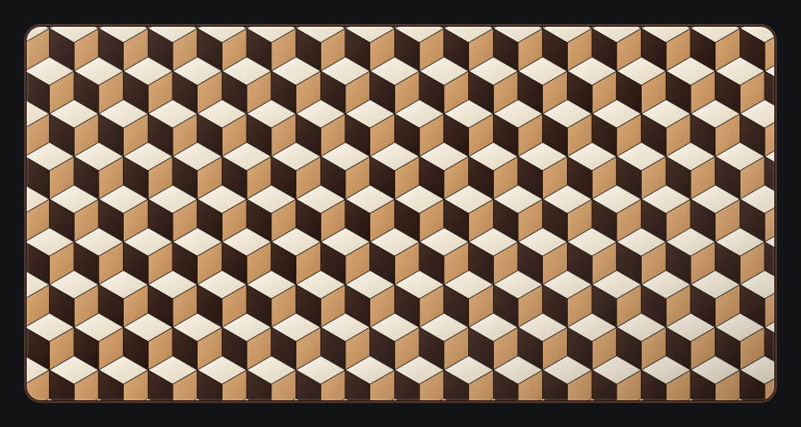
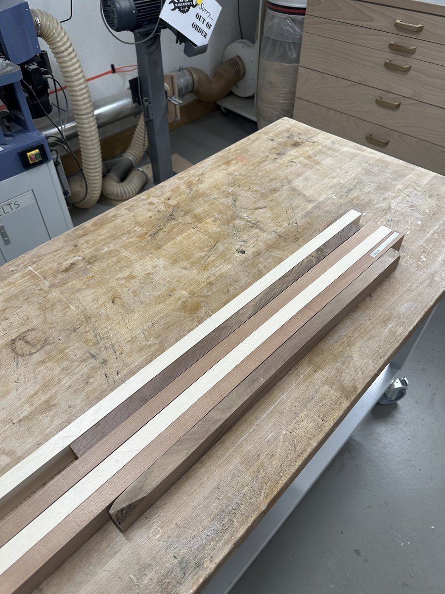
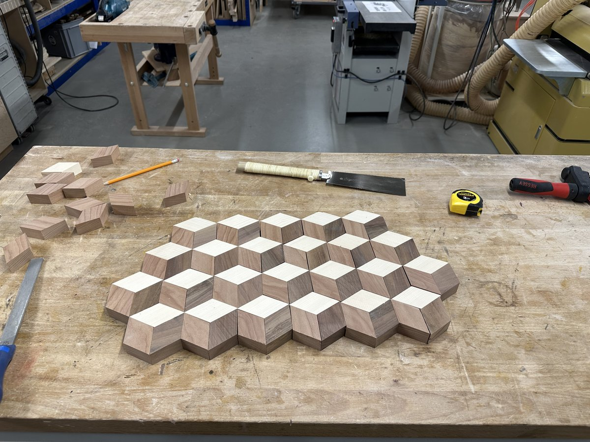
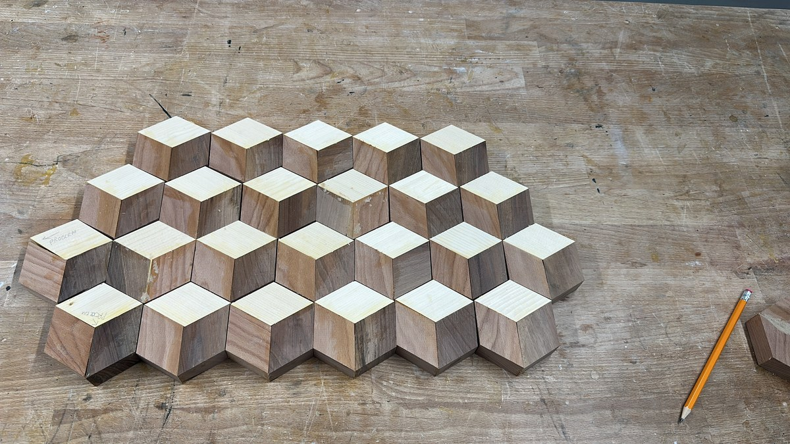
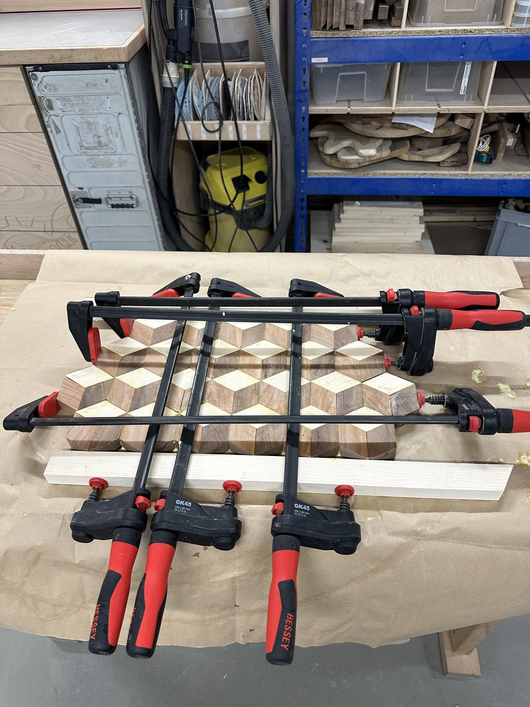
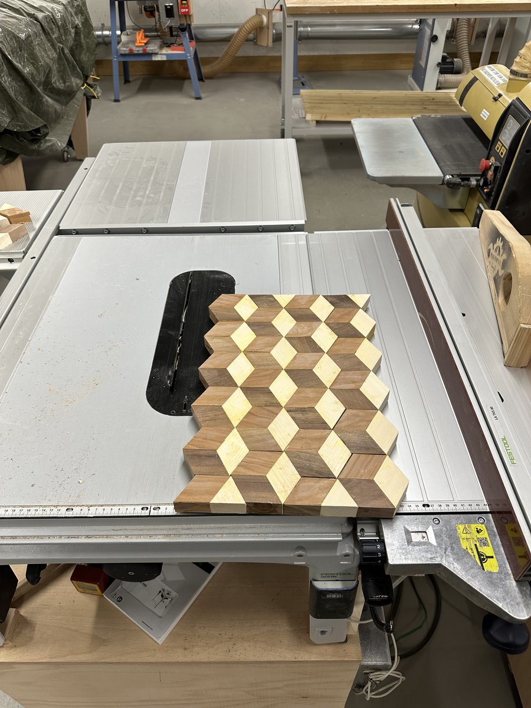
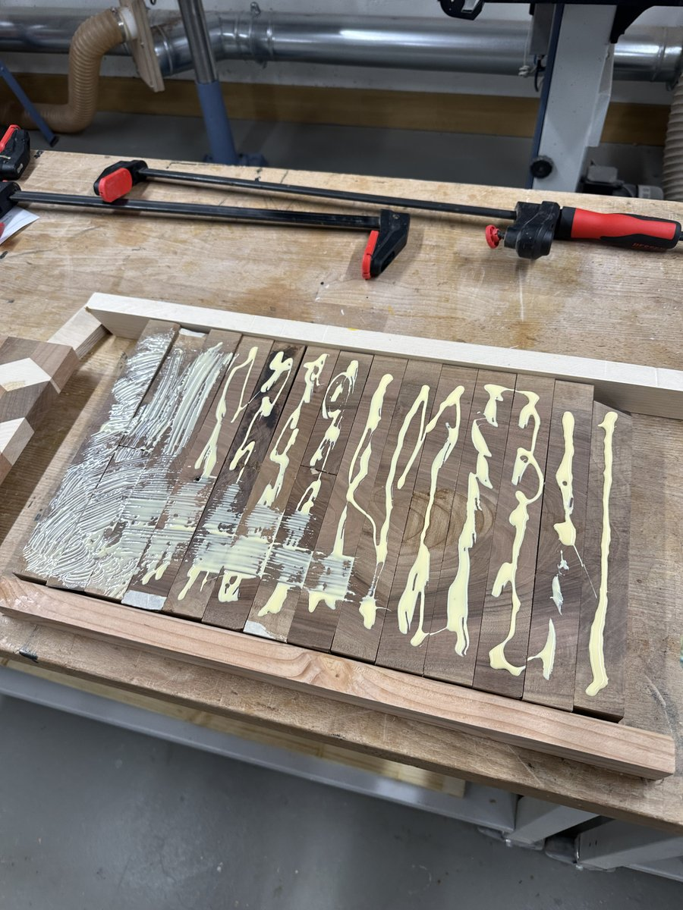

Un tagliere da 45 cm × 24 cm × 2,5 cm che genera una straordinaria illusione tridimensionale di cubi a cascata. Progettato a Zurigo attraverso una rigorosa tassellatura tritonale a 60° in noce svizzero, faggio europeo e acero alpino / abete.
Specifiche del progetto e parametri tecnici
Dimensioni finali
45,0 cm lunghezza × 24,0 cm larghezza × 2,5 cm spessore
Effetto visivo
Cubi isometrici 3D in caduta (Illusione ottica reversibile del cubo di Necker)
Pattern geometrico
Tassellatura romboidale a 60° / 120° (Rhombille tiling) disposta in triadi esagonali
Legnami e ruoli tonali
• Acero alpino / Abete (Acer / Picea) — Faccia superiore (Punto luce chiaro, cattura la luce zenitale)
Titebond III Ultimate (resina alifatica impermeabile approvata per contatto alimentare)
Macchinari principali e dime
Banco sega Festool TKS 80 EBS con guida goniometrica e slitta per tagli trasversali, levigatrice a tamburo Jet, morsetti paralleli e a tubo Bessey, cale in legno duro, applicatore Glue-Bot
Ciclo di levigatura
Levigatura rotorbitale sequenziale: grana 80 → 120 → 180 → 240 (con bagnatura delle fibre) con platorelli rigidi
Sistema di finitura
Bagno di saturazione profonda in olio minerale alimentare USP seguito da burro condizionante alla cera d'api biologica
Funzione del tagliere
Tagliere per salumi e formaggi ad alta resistenza, taglio del pane e spettacolare vassoio da portata / centrotavola per scrivania
Origine della bottega
Zurigo, Svizzera
Trasformazione interattiva della materia
Assieme grezzo a secco vs. Rivelazione della finitura a olio minerale
Trascina il cursore centrale per ammirare la drammatica trasformazione dai singoli segmenti grezzi non incollati assemblati a secco sul banco di lavoro fino al tagliere a illusione ottica 3D completamente saturo e dalla lucentezza profonda.
Legno grezzo asciuttoCompleta saturazione d'olio
Geometria dell'ebanisteria
L'anatomia dell'illusione dei cubi 3D
Perché questo motivo inganna la percezione spaziale umana e le rigorose tolleranze geometriche richieste in laboratorio.
Fase 01Fisica ottica e valori tonali
Il principio di illuminazione a tre valori tonali e la tassellatura romboidale
L'illusione 3D si fonda essenzialmente sul contrasto di valore tonale (luminosità) prima ancora che sul contrasto cromatico. Affinché la corteccia visiva umana percepisca un volume tridimensionale su una superficie piana, il cervello necessita di tre distinti valori di luce coerenti con un'ipotetica sorgente luminosa direzionale:
Piano superiore (Acero / Abete): Riflette la massima luce incidente (~80% di riflettanza). Costituisce un punto luce chiaro e brillante che cattura l'illuminazione zenitale.
Piano intermedio / Mezzotono (Faggio): Rappresenta la luce ambientale diffusa (~45% di riflettanza). Il tono denso e caldo ambrato del faggio europeo fa da ponte cromatico tra la luce piena e l'ombra profonda.
Piano d'ombra (Noce): Simula la faccia in ombra (~15% di riflettanza). Il ricco noce svizzero apporta tonalità profonde color caffè espresso e cioccolato, ancorando il lato in ombra di ogni singolo cubo.
Una volta assemblati in rombi a 60°/120° che convergono in un unico vertice comune, il cervello ricompone automaticamente un cubo isometrico fluttuante nelle tre dimensioni. A seconda dell'attenzione cognitiva, i cubi possono apparire come sporgenti verso l'osservatore o come cavità che recedono: il classico fenomeno ottico reversibile del cubo di Necker.

Schema vettoriale che illustra la griglia romboidale matematica a 60°/120° prima della fabbricazione in bottega.Clicca per ingrandire
Fase 02Tolleranze trigonometriche
La sfida degli angoli cumulativi: la precisione a 60°
A differenza dei taglieri ortogonali a 90 gradi (come la scacchiera in faggio e amarante), il tagliere a cubi 3D richiede tagli a esattamente 60 gradi. Uno scostamento di appena 0,1° per taglio si moltiplica per sei a ogni giunzione esagonale, generando un errore di apertura di 0,6°. Moltiplicato su 8 file, una guida goniometrica imprecisa lascerebbe fessure evidenti che nessuna pressione dei morsetti potrebbe mai richiudere senza spezzare le fibre del legno.
Strategia di bottega: la tecnica dei listelli laminati a due stadi
Anziché tagliare e tentare di incollare centinaia di singoli rombi sfusi, i falegnami incollano lunghi listelli paralleli di noce, faggio e acero lungo il bordo, per poi sezionare l'intero pannello laminato attraverso la venatura a esattamente 60 gradi. Sfalsando i listelli tagliati adiacenti di un solo segmento, i cubi a cascata si allineano automaticamente, garantendo linee di colla perfettamente dritte e risparmiando decine di ore di rischioso montaggio.
Documentazione del processo
Il diario di lavorazione completo
Un viaggio fotografico cronologico attraverso la laminazione iniziale dei listelli, il sezionamento a 60°, la registrazione a secco, il serraggio con cale, la squadratura e l'indimenticabile finitura a olio.
Passo 01Laminazione iniziale
Laminazione dei listelli a tre essenze e preparazione del grezzo
Le fondamenta dell'illusione ottica prendono forma piallando listelli lunghi e perfettamente uniformi di noce svizzero, faggio europeo e chiaro acero alpino/abete. Ciascun listello è stato calibrato a uno spessore identico e squadrato sul bordo. I listelli sono stati quindi disposti secondo una sequenza tonale ripetuta — noce (ombra), faggio (mezzotono) e acero (luce) — e incollati costa contro costa per realizzare il grezzo rigato iniziale multistrato.
Il serraggio è stato eseguito mediante robusti morsetti a barra e a vite Bessey distribuiti a passo ravvicinato lungo il banco. Una pressione omogenea su tutta la lunghezza è stata fondamentale per prevenire svergolamenti o giunti privi di colla, garantendo che ogni fetta successiva conservasse larghezze di striscia perfettamente identiche.

Listelli alternati di noce, faggio e acero sotto pressione uniforme per formare il blocco laminato principale.Clicca per ingrandire
L'intuito del falegname: Calibrazione della larghezza dei listelli
In una proiezione isometrica, l'altezza verticale di un rombo a 60° è legata allo spessore di taglio dal seno di 60° (\(\sqrt{3}/2 \approx 0{,}866\)). Se la larghezza del listello e lo spessore del successivo taglio trasversale non rispettano l'esatto rapporto geometrico, i rombi risultano allungati o schiacciati, trasformando i netti cubi isometrici 3D in prismi esagonali deformati.
Passo 02Taglio angolare di precisione
Taglio trasversale a 60 gradi sul banco sega
Una volta che il blocco laminato è giunto a polimerizzazione completa ed è stato piallato su entrambe le facce, è stato portato al banco sega per essere tagliato in segmenti angolati. La guida goniometrica è stata calibrata esattamente a 60 gradi rispetto alla lama. Una guida martire e un blocco d'arresto hanno assicurato che ogni striscia sezionata uscisse con larghezza di segmento identica e spigoli privi di scheggiature.
Ogni passata attraverso la lama in metallo duro ha tagliato trasversalmente il grezzo rigato, producendo lunghe strisce a parallelogramma in cui le sezioni di noce, faggio e acero risultano inclinate in rombi a 60°/120°. Tagli netti e privi di vibrazioni sono qui vitali: anche la minima oscillazione della lama si tradurrebbe in avvallamenti durante il secondo incollaggio.
I tagli inclinati trasformano le strisce lineari in parallelogrammi con facce romboidali a 60°.Clicca per ingrandire
Passo 03Assemblaggio a secco e allineamento
Accoppiamento a secco del motivo a cubi in caduta
Questo è il momento culminante della lavorazione: disporre i listelli a parallelogramma affiancati sul banco di montaggio. Sfalsando ogni listello successivo lungo l'asse a 60 gradi di esattamente un segmento romboidale, i singoli rombi si combinano a formare esagoni trifacciali.
All'istante, le strisce diagonali bidimensionali scompaiono, sostituite dalla straordinaria illusione ottica di cubi tridimensionali impilati che precipitano nello spazio. Durante la prova a secco, i listelli sono stati esaminati con luce radente per verificare che la venatura del legno scorresse armoniosamente e che nessun listello fosse stato capovolto per errore.
Lo sfalsamento di un'unità tra listelli adiacenti fa convergere le tre essenze nei vertici a 120°.Clicca per ingrandire
Passo 04Ispezione delle tolleranze
Allineamento dei vertici e controllo accurato delle giunzioni
Prima di procedere all'applicazione dell'adesivo, è stata condotta una scrupolosa ispezione di ogni intersezione. In una corretta tassellatura isometrica, tre distinti rombi convergono in ciascun vertice condiviso: un rombo superiore luminoso, un rombo laterale in mezzotono caldo e un rombo scuro in ombra.
Qualsiasi deviazione nell'angolo di taglio o variazione di spessore si manifesterebbe all'istante con spigoli scalinati o fessure in questi nodi a tre punte. Sottili linee di riferimento a matita sono state tracciate lungo i listelli per garantire un perfetto registro longitudinale durante il serrato tempo aperto dell'incollaggio.

Verifica fondamentale: accertarsi che i vertici delle tre facce convergano senza slittamenti assiali o disallineamenti.Clicca per ingrandire
Passo 05Il primo incollaggio
Assemblaggio manuale dei rombi in cubi esagonali
Con tutti gli angoli tagliati e le tolleranze verificate a secco, è iniziata la delicata prima fase di assemblaggio: incollare i singoli rombi in unità esagonali. Nel disegno isometrico dei cubi a cascata, ogni cubo 3D è formato da tre rombi a 60°/120° — uno in abete alpino (luce zenitale), uno in faggio europeo (mezzotono caldo) e uno in noce svizzero (ombra profonda) — che convergono esattamente in un vertice centrale a 120 gradi.
Serrare tre rombi sciolti con tradizionali morsetti a vite o paralleli è praticamente impossibile senza incorrere in slittamenti: gli angoli acuti a 60° agiscono come cunei e la forza meccanica dei morsetti fa scivolare violentemente i pezzi fuori registro.
Per risolvere il problema, il primo incollaggio è stato eseguito interamente a mano. La resina alifatica Titebond III è stata stesa sui bordi a 60 gradi delle tre facce. Ogni triade esagonale è stata quindi afferrata saldamente tra le dita, esercitando una pressione manuale costante per 1 o 2 minuti per blocco, finché l'adesivo non ha sviluppato una presa iniziale sufficiente a mantenere la posizione senza deformarsi o slittare.
Questo incollaggio manuale è stato ripetuto blocco dopo blocco, unità dopo unità, per ogni singolo esagono del tagliere. È stato un lavoro lungo e faticoso per le dita, che ha richiesto enorme concentrazione e pazienza, ma ha permesso micro-regolazioni tattili garantendo che le facce superiori rimanessero complanari e i vertici nitidi.

Tutti gli esagoni a 3 rombi assemblati a mano, tenuti sotto pressione manuale per 1–2 minuti per blocco fino alla presa.Clicca per ingrandire
Retrospettiva dell'artigiano: Tecniche di montaggio alternative ed efficienti
Benché stringere ogni blocco a mano per 1–2 minuti abbia garantito giunzioni perfette senza slittamento da morsetti, è innegabilmente un processo lento e impegnativo. Per le prossime realizzazioni esistono tecniche alternative eccellenti:
Nastrino elastico (Blue Tape): disporre i tre rombi in linea su nastro adesivo per mascheratura ad alta tenuta, applicare la colla, ripiegarli nell'esagono 3D e tendere con forza il nastro sulla giunzione di chiusura. La tensione elastica del nastro richiama i tre giunti simultaneamente con pressione radiale uniforme, eliminando la tenuta manuale.
Dima a V a 60°: costruire una scanalatura a V in legno a 60 gradi rivestita di nastro da pacchi, premendo i tre rombi con un cuneo posteriore contro la battuta.
Laminazione angolare continua pre-incollata: incollare le tre essenze in lunghi grezzi laminati inclinati a 60° prima della troncatura, ottenendo file di rombi pre-unite in un unico passaggio.
Passo 06Il secondo incollaggio
Laminazione principale con cale di serraggio
Con tutti i singoli esagoni polimerizzati dal primo incollaggio, il progetto è passato al secondo incollaggio: l'unione dell'intero campo di cubi esagonali in un unico pannello monolitico. Quando si applica una forza di serraggio laterale contro giunzioni inclinate a 60 gradi lungo più file, l'effetto cuneo tende a far slittare il pannello lungo i giunti facendolo incurvare verso l'alto come una tenda.
Per contrastare questa spinta, robuste cale di serraggio in legno duro rivestite di nastro da imballaggio (per impedire l'adesione della colla) sono state collocate sopra e sotto l'assieme. Morsetti a vite verticali hanno bloccato le cale saldamente al banco, mentre i morsetti paralleli Bessey hanno impresso una pressione laterale controllata, serrando tutti i listelli in un unico pannello perfettamente piatto senza alcun disallineamento.
Rigide cale superiori e inferiori mantengono le strisce angolate a 60° ben adese al banco mentre i morsetti laterali chiudono le fughe.Clicca per ingrandire
Passo 07Polimerizzazione e ispezione
Rimozione dei morsetti e verifica della fuoriuscita di colla
Dopo 24 ore complete di riposo sotto tensione, i morsetti e le cale sono stati allentati. Il pannello grezzo incollato si presentava con il suo caratteristico bordo perimetrale a zig-zag a gradini, conseguenza naturale dello sfalsamento delle strisce a 60°.
L'ispezione dei cordoli di colla indurita lungo ciascuna giunzione ha confermato una fuoriuscita uniforme e continua su tutto il pannello, dimostrando una stesura impeccabile senza vuoti d'adesivo. I cordoni di colla secca sono stati rimossi con un raschietto per legno prima della calibratura a macchina, per preservare i taglienti degli utensili.

Bordi perimetrali a zig-zag prima della refilatura, con la colla Titebond III indurita pronta per la raschiatura.Clicca per ingrandire
Passo 08Squadratura di precisione
Rifilatura perimetrale sul banco sega Festool
Per trasformare il pannello a gradini in un tagliere rettilineo e pulito, il blocco è stato posizionato sulla postazione di taglio di precisione: il banco sega Festool TKS 80 EBS (dotato di tecnologia di sicurezza attiva SawStop AIM).
Grazie a un carrello scorrevole di precisione con guida per tagli trasversali, le estremità seghettate sono state rifilate di netto, stabilendo il primo vero bordo di riferimento a 90 gradi. Il tagliere è stato quindi ruotato e rifilato longitudinalmente per definire lati perfettamente paralleli, portando le dimensioni esterne definitive a 45,0 cm × 24,0 cm. Sullo sfondo della bottega è visibile la levigatrice a tamburo Jet, pronta per la calibratura dello spessore.

Banco sega Festool TKS 80 che rifila i bordi a gradini; sullo sfondo della bottega si intravede la levigatrice a tamburo Jet.Clicca per ingrandire
Passo 09Spianatura e preparazione dei bordi
Levigatura a tamburo, cale di bordo e preparazione della superficie
Con il perimetro squadrato, il tagliere è passato alla spianatura e calibratura sulla levigatrice a tamburo Jet. Molteplici passate leggere hanno rimosso ogni residuo dislivello tra i listelli adiacenti, portando il tagliere allo spessore uniforme di 2,5 cm e preservando al contempo la nitidezza delle intersezioni.
Tornato sul banco da lavoro, cale di bordo e morsetti paralleli Bessey sono stati utilizzati per la stabilizzazione finale e la rifinitura dei bordi. Il tagliere è stato quindi levigato in progressione con levigatrici rotorbitali: grana 80 → 120 → 180 → 240. Tra la grana 180 e la 240, l'intera superficie è stata bagnata con panno in microfibra umido (water-popping) per far sollevare le fibre schiacciate, per poi essere levigata a grana 240 donando un tocco vellutato. Uno smusso delicato a 45° è stato fresato lungo tutti i bordi e gli angoli perimetrali per garantire il massimo comfort ergonomico.

Allestimento sul banco: serraggio delle cale di bordo accanto al dosatore Glue-Bot prima della finitura abrasiva definitiva.Clicca per ingrandire
Passo 10La rivelazione della finitura
Il colpo d'olio (Oil Pop) — La prima pennellata centrale
Dopo ore di pianificazione geometrica, tagli, incollaggi e attenta levigatura, è giunto il momento tanto atteso da ogni ebanista: la prima mano di finitura. Con un pennello pulito in setole naturali, puro olio minerale per uso alimentare USP è stato steso lungo la colonna centrale della tavola grezza e asciutta.
La metamorfosi toglie il fiato. Il noce polveroso e grigio si accende di colpo in un intenso color espresso scuro; il faggio chiaro sboccia in una calda sfumatura ambrata mielata; e le facce in abete acquistano una luminosità pulita e radiosa. La netta separazione tra i fianchi grezzi carteggiati e il centro appena oliato crea uno spettacolo visivo indimenticabile sul banco da falegname.
Contrasto immediato: il legno grezzo e opaco sui lati rispetto ai cubi vibranti e saturi d'olio lungo la linea centrale.Clicca per ingrandire
Passo 11Nutrimento profondo
Saturazione completa della superficie e profondità dell'illusione 3D
L'olio minerale è stato applicato generosamente su tutta la superficie superiore, inferiore e sui bordi, lasciando che il legno di testa e di filo assorbisse l'olio fino a completa saturazione. Rimosso l'eccesso e lasciato riposare per la notte, il tagliere ha ricevuto una mano calda di burro per legno a base di cera d'api e oli vegetali, lucidato a mano fino a una setosa finitura semilucida.
Con la superficie interamente nutrita, l'effetto ottico sprigiona tutto il suo vigore. I piani d'ombra in noce sembrano sprofondare di centimetri sotto il piano, le facce in faggio donano calore e consistenza corporea, mentre le facce superiori in acero sembrano investite da un fascio di luce zenitale. Sotto qualsiasi condizione di illuminazione, la tavola piana appare inequivocabilmente come un rilievo tridimensionale di cubi impilati.
Il tagliere finito da 45 cm × 24 cm con profonde ombre in noce, faggio dorato e luminosi punti luce superiori.Clicca per ingrandire
Passo 12L'opera d'arte in servizio
Il manufatto completato nel suo ambiente d'elezione
Ecco il tagliere a illusione ottica cubi 3D completato nel suo contesto d'uso quotidiano — fotografato su una moderna scrivania con doppio monitor a Zurigo. Sia che venga impiegato come spettacolare tagliere di servizio per pane a lievitazione naturale e formaggi svizzeri stagionati, sia come elegante sottomano direzionale e scultura geometrica da conversazione, la maestria artigianale parla da sé.
Ogni giunzione è serrata al decimo di millimetro, la superficie è perfettamente piana e vellutata al tatto, e la precisione geometrica della tassellatura a 60° rappresenta una testimonianza duratura di falegnameria paziente e metodica.
Finitura setosa impeccabile: il tagliere esposto al centro della scena che esalta la nitidezza dei cubi isometrici in caduta.Clicca per ingrandire
Cronaca per immagini
Galleria fotografica completa delle 12 fasi
Esplora gli scatti ad alta risoluzione di ciascuna fase di fabbricazione del tagliere a cubi 3D.
01 • Incollaggio listelli
02 • Tagli angolari a 60°
03 • Prova a secco del pattern
04 • Ispezione dei vertici
05 • Primo incollaggio
06 • Serraggio con cale
07 • Pannello polimerizzato
08 • Squadratura al banco sega
09 • Preparazione dei bordi
10 • Prima stesura d'olio
11 • Bagno d'olio completo
12 • Esposizione finale
Specie legnose
Le tre essenze in armonia
Una composizione di legni autoctoni europei e svizzeri selezionati per tonalità, densità e durata nel tempo.
Noce svizzero
Juglans regia
Pregiato per le sue tonalità sfumate color cioccolato fondente, la tessitura fine e le qualità tattili vellutate. In questo tagliere, il noce costituisce l'ancoraggio dell'illusione 3D, proiettando ombre profonde realistiche che fanno balzare ogni cubo fuori dalla superficie.
Durezza Janka
1.010 lbf
Ruolo nell'illusione
Faccia d'ombra
Faggio europeo
Fagus sylvatica
Robusto, resiliente e poco poroso. Reperito localmente da foreste a gestione sostenibile dell'Europa centrale. Il suo mezzotono ambrato caldo e mielato offre l'equilibrio cromatico indispensabile per collegare luce e ombra.
Durezza Janka
1.450 lbf
Ruolo nell'illusione
Faccia mezzotono
Acero alpino / Abete
Acer pseudoplatanus / Picea abies
Rinomato per la lucentezza chiara e lattea e la fibra stretta e fine. Funge da vivace punto luce superiore di ciascun cubo, simulando la luce solare zenitale che scende sul paesaggio geometrico.
Durezza Janka
950 - 1.450 lbf
Ruolo nell'illusione
Punto luce superiore
Manufatto culinario per generazioni
Protocollo di cura e manutenzione
Come preservare un tagliere geometrico multi-essenza affinché duri per generazioni.
Cosa fare
Lavare a mano entrambi i lati con sapone per piatti delicato e acqua tiepida subito dopo l'uso.
Asciugare accuratamente con un canovaccio e riporre in verticale per consentire un'asciugatura uniforme su tutti i lati.
Applicare olio minerale per uso alimentare una volta al mese o ogniqualvolta il legno appaia opaco o secco al tatto.
Riapplicare burro per legno a base di cera d'api ogni 3–4 mesi per una protezione idrorepellente profonda.
Cosa non fare mai
Non lavare mai in lavastoviglie: le alte temperature, i detergenti aggressivi e il vapore sciolgono la colla e incurvano il legno irreparabilmente.
Non lasciare mai in ammollo o immerso nel lavello.
Non lasciare mai asciugare appoggiato in piano sul piano cucina (l'umidità intrappolata sotto provoca svergolamenti e sollecita le giunzioni).
Non utilizzare mai oli da cucina come olio d'oliva o di semi (irrancidiscono, appiccicano e producono odori sgradevoli).